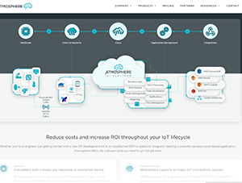
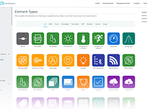
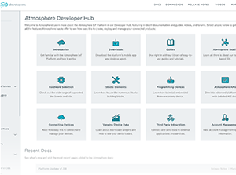

<section id="atmo" style="margin-bottom: 2rem">
  <div class="container" style="padding-top: 0">
    <div class="grid">
      <div>
        <article style="margin: 0; padding: 0">
          <div class="matched-radius">
            <div
              class="matched-radius__inner"
              style="
                background-image: linear-gradient(white, var(--highlight2));
                padding: var(--block-spacing-vertical)
                  var(--block-spacing-horizontal);
              "
            >
              <h2 style="margin-bottom: 57px">Atmosphereiot.com</h2>

              <p style="margin-bottom: 15px">
                Atmosphere IoT is an Internet of Things platform that enables
                users to develop and deploy IoT solutions using a low-code
                development environment. This company emerged as a spin-off from
                Anaren Inc.'s IoT division. My contributions to Atmosphere IoT
                included creating a custom <strong>WordPress</strong> theme for
                their marketing site and blog. Additionally, I developed a
                custom static site using Jekyll for their developer
                documentation. Furthermore, I provided assistance in building a
                custom theme for their IoT platform, utilizing technologies such
                as Handlebars, PhoneGap, and other relevant tools.
              </p>
              <p>
                Click the thumbnails below to check out their Wordpress site or
                head over to
                <a
                  href="https://docs.atmosphereiot.com/"
                  target="_blank"
                  class="text-underline"
                  >docs.atmosphereiot.com</a
                >
              </p>
              <div class="thumb-wrapper">
                <a
                  target="_blank"
                  href="{{site.baseurl}}/assets/images/atmo/1.png"
                  ></a>

                <a
                  target="_blank"
                  href="{{site.baseurl}}/assets/images/atmo/2.PNG"
                  ></a>
                <a
                  target="_blank"
                  href="{{site.baseurl}}/assets/images/atmo/3.PNG"
                  ></a>
              </div>
            </div>
          </div>
        </article>
      </div>
    </div>
  </div>
</section>
